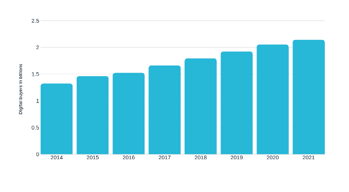
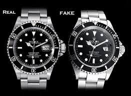

Unlocking the Potentials of Dropshipping business
Dropshipping is one of the trending online business models which has attracted a lot of entrepreneurs. If you have an interest in e-commerce then chances are you have already heard the term dropshipping. Not only heard but also entrepreneurs who are engaged in dropshipping know that it’s one of the most profitable businesses yet not everyone holds the key to unlock its potential .
Dropshipping is a business model where a seller can sell products without owning any inventory and have the products delivered to the customers via the supplier who holds the inventory of the product. The merchants sell the products without even seeing or handling the products directly. Then, the third-party supplier ships the products to the customer when they receive the order from a merchant.
There were 1.32 billion online shoppers in 2014 which rapidly rose to 1.8 billion in 2018 and 2.05 billion online buyers in 2020.
Source: Oberlo
Is Dropshipping profitable?
Dropshipping attracts entrepreneurs and businesses while its profitability depends on how well they utilize the platform. Once we have the basic knowledge about it and tools to analyze our performance, dropshipping can be profitable in a sustainable way. Research by https://torchbankz.com/dropshipping-statistics/ shows “Dropshippers Can Earn More Than 50% Profit Than Those Who Keep Their Own Stock Inventory”
Some of the reasons dropshipping remain profitable are :
Low Overhead Costs :
The costs of running the business are relatively low. Dropshipping companies don't have to spend on costs like office rent, salary expenses, repairs, etc as compared to physical offices.
Easy to scale up
Once the business hits the ground running, we can easily scale it up to cater to larger audiences. The costs of scaling don’t increase in equal measure as the increase in customers targeted.
Low entry barriers
Dropshipping can be pursued by users with no business experience and as long as we learn the basics we can immediately start our business and learn as we progress. Most people can make an easy entry to this business and compete with others.
Is Dropshipping Legal?
Dropshipping is a perfectly legal business model of order fulfillment. There are no laws or policies that prohibit the use of dropshipping services. Also, we must acquire appropriate licenses to sell all the products. Likewise, we should ensure the quality of the products is as promised.

However, we must be well informed about the following mistakes :
Prohibited Products
Although we can sell the products without handling them ourselves, we must be aware of the marketplaces’ policy and knowledge on products that can be sold in our country. Furthermore, Prohibited and restricted products may include products like Medications, Pornography, Weapons, Alcohol, etc.

Counterfeit and knock off
Counterfeit products look like original products and infringe trademark and copyright. Suppliers may produce counterfeit goods and low-quality products but the seller will be liable if the seller sells those products. To avoid scams, know how to distinguish counterfeit products from real ones.
Sales Channels
Sales channels are the platforms where dropshipping services can be carried out. Customers choose their products and place an order from the sales channel in the beginning. Nonetheless, the suitability of the sales channels may vary depending on the products. One specific channel may not fulfill the needs of all types of products. Some of the sales channels are :
- eBay dropshipping
eBay is one of the world’s largest and oldest platforms to sell products and services. In addition, they also provide access to a directory for product sourcing. One of its major reasons for the success of the platform is that they have included an auction feature that allows sellers to put their products on auction.
- Amazon dropshipping
Amazon has more than 300 million users and one of the highest no. of online traffic. Not to mention, Amazon is a great sales platform for drop shippers if we can cater to a niche market. With FBA (Fulfillment by Amazon) service, Amazon picks up the orders, packs the product, and ships them to its customers. They also have a wide range of tools that helps in decision-making.
- Social Media Marketplace

Social media platforms like Facebook, Pinterest, etc help sellers to find customers. Additionally, If our social media pages have a high level of engagement then we can convert viewers into buyers. For example, we can add a shop button to our Facebook page and directly sell products from there. Similarly, AutoDS’s Facebook marketplace dropshipping software makes this process easier.
- Privately Owned E-Commerce Websites
These storefronts are those channels that we can set up personally. They can grow and gather a considerable amount of traffic over time. Not to mention, self-owned E-commerce platforms can be set up to enjoy less restriction and more customizations.
Automation and Scaling
Automation

Automation of Dropshipping business is done to reduce the manual labor that humans have to perform by replacing manual work with technology. The more automation a business adopts the less manual work the business has to put in.
Automating the dropshipping business allows us to :
Save time
Dropshipping requires a lot of attention and we as a seller have lots of responsibilities in the business. Minimizing the tasks we have to carry out manually helps us focus on other business aspects. In reality, we can grow our business at a faster rate.
Be Cost-effective
Automation means hiring fewer employees and letting technology handle more tasks. Moreover, It lets the business cut unnecessary costs and helps them stay afloat for a longer time.
Various tools are available to help us automate dropshipping services.
Browser extension
Many browser extensions help sellers add products to sell while browsing on sites such as Ali-Express, Amazon, etc. When we add products from these sites, we get the product details automatically in our account with the help of services like AutoDS. Similarly, our details are also shared on the website and we don't have to manually provide them.
Automated Emails

We can automate emails for order confirmation, canceled orders, refunded orders, etc. We can also allow notifications to be sent to us in case our business makes a sale. Similarly, follow-up emails and updates will be forwarded automatically once customers place an order. You can use the top 10 best email marketing services for this purpose.
Price and stock monitoring
When stocks and prices are monitored, we can track the records of our current stock availability. We can keep up with the changes suppliers make in their prices as well as the stocks. Likewise, AutoDS’s price and stock monitor services help us to constantly monitor profit, break-even, minimum required quantity, etc.
Automatic Order Fulfillment and Tracking number updates
With the help of Automatic orders, we can place orders before price fluctuates or at a specific time in the future. Additionally, the order can be placed even when the computer is turned off.
Automation services in Tracking numbers can help in updating tracking information. It also helps to notify the customers about the products they have ordered.
SCALING

Every business aims to grow and scale up but scalability requires both capacity and ability. Will our system, technologies, and manpower help accommodate growth in our business?
Analysis and Planning
Planning begins with writing the goal, the revenue we want to generate, the number of new customers expected, and the orders we want to generate. Also, on the other hand, write down expenses details such as costs of new technology, employees, and systems. The more specific we are about the details the more in-depth planning can be done.
Securing the Sales
Scaling your business means you are assuming more sales are going to take place. To achieve this sales target make sure you have :
- Enough leads to pursue
- Sales representatives to follow new leads and convert them to sales
- Have resources to manage new sales orders
Technology
Technology can slash the costs of the business and smoothens operations if we wisely invest in them. We can reap the high benefits of economies of scale with comparatively low investment in technology. Most of the manual work can be replaced by technology and it is more efficient to operate our businesses.
Staffs and Employees

Building a team of employees is a major advancement in any business. Technology can provide huge advantages but it needs to be handled by competent staff. In the end, we need people to operate these technologies and systems that are in place . Hiring the right employees can increase our productivity.
Conclusion
The dropshipping business model offers small startups an opportunity to compete with medium/large-sized retailers. This business model is a chance to enter the e-commerce market for businesses with limited resources and unlimited potential. Dropshipping may look complex at first. Nevertheless, with the right products and knowledge to operate and take advantage of the technology, there is a high chance of making a profit. If you want a more elaborate guide you can watch the video that guides you through specific services.